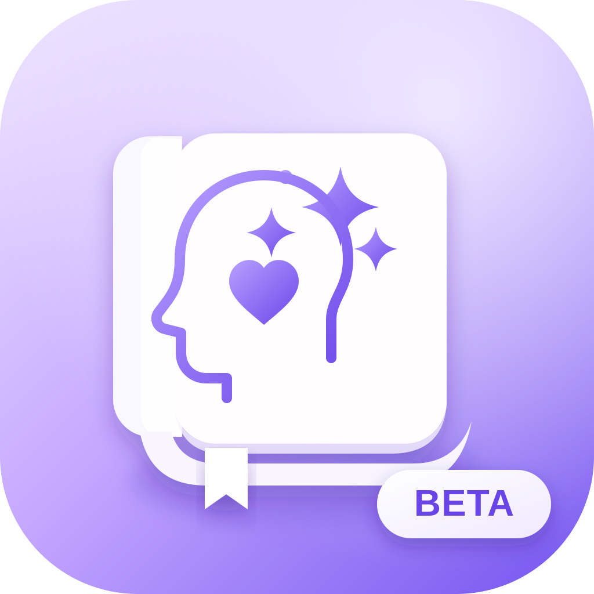

Registro Mental
Menu de acesso aos ambientes, testes e ferramentas de recuperação.
Apps
Oficial ESTÁVELUso diário · v1.1.1
Seus dados reais.
Dados isolados.
Seus dados reais.

Beta BETATestes · v1.2.0-beta.1Dados isolados.
Diagnóstico
Ferramentas do Oficial
InicializadorAbertura limpa do Oficial.
RecuperaçãoLimpa apenas a interface/cache.
Modo SeguroVerifica seus dados e permite backup mesmo se o app principal falhar.›
Ferramentas da Beta
Inicializador BetaAbertura limpa da Beta.
Recuperar BetaNão toca no Oficial.
Modo Seguro BetaInspeciona somente os dados descartáveis de testes.›
Importante: a Beta continua usando armazenamento separado. Copiar dados do Oficial para a Beta cria uma cópia independente; alterações feitas depois na Beta não modificam seus registros reais.